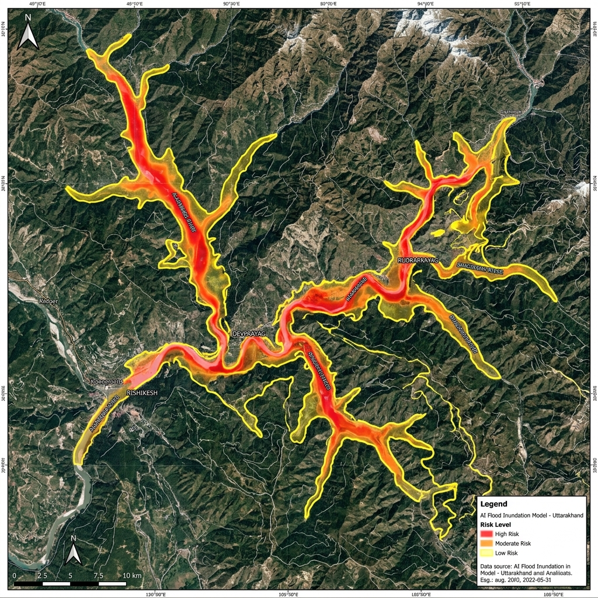

Dashboard
Overview of disaster risk assessment and alerts
Risk Map (Live Overview)
Real-time multi-satellite risk classification across Indian statesRecent Activity
Real-time alerts and pipeline triggersSevere cloudburst detection along Alaknanda river basin.
Soil moisture saturation exceeded 89% threshold.
Continuous monsoon surge over Brahmaputra tributaries.
Low pressure cyclonic circulation heading towards coastal Odisha.
Risk clearance report signed and delivered to local DM.
Semantic & Multimodal Retrieval
Natural-language text query and image-to-image similarity search across satellite imagery archives (Section 2.2.1)
Multi-Temporal Change & False-Alarm Suppression
Bi-temporal feature delta, change type classification, and confounding factor masking (Sections 2.2.2 & 2.2.3)
Bi-Temporal Inspection: Alaknanda River Sector [30.384°N, 79.326°E]
Drag center slider left/right to compare baseline vs current observationPinpoints the earliest available observation at which change is supported by usable imagery
Quality Handling & False-Alarm Suppression
Section 2.2.3 Quality MasksDiscovery & Embedding Clustering
Unsupervised grouping of similar sites across wide areas without manual query formulation (Section 2.2.4)
Erected concrete foundations and industrial piers along water margins
High-density convoy and industrial machinery gatherings on open flat ground
Linear tree loss accompanied by newly cut grading and dirt tracks
Water body waterline retreat with exposed mudflat spectral signatures
Discovered Peer Sites in Cluster 1 (Riverbank Structures)
Click any site to examine change evidenceAnalyst Review Queue & Provenance
Human-in-the-loop candidate verification, decision feedback loop, and full audit provenance (Section 2.2.5)
Geospatial Decision Audit Trail (Continuous Provenance Log)
Cryptographically timestamped validation record used for feedback reranking| Event ID | Timestamp | Analyst | Decision | Change Category | Source Scene Provenance | Feedback Weighting |
|---|---|---|---|---|---|---|
REV-800 |
30/09/2026 11:42 UTC | Admin Officer (SDMA) | Confirmed Change | Construction | S2B_MSIL2A_20260313T... |
+0.12 (Positive Reinforce) |
REV-799 |
30/09/2026 10:15 UTC | Admin Officer (SDMA) | Rejected (False Alarm) | Snow/Shadow Confounder | S2A_MSIL2A_20260211T... |
-0.24 (Penalized Confounder) |
Archive Ingestion & Evaluation Hub
Incremental GeoTIFF / Cloud Optimized GeoTIFF (COG) indexing and reproducible evaluation reporting (Sections 2.2.6 & 2.3)
Incremental Ingestion Engine (GeoTIFF / COG)
Ingest new satellite acquisitions into the vector index without rebuilding from scratchPreserves CRS projection, spatial pyramids, and radiometric band calibrations.
Or Click to Simulate Acquisition Ingestion[INFO] Loaded staged ONNX weights: EarthSemantic-ViT-L14-INT8.onnx (Size: 342MB)
[INFO] Geo-Vector FAISS Index active: 4,820 tiles mapped across UTM Zone 44N.
[SUCCESS] Ready for incremental COG tile ingestion. Network interface: DISCONNECTED (Verified).
New Assessment
End-to-end multimodal geospatial risk analysis workflow
Basic Information & Dynamic Hazard Modeling
Enter the basic details and adjust physical meteorological parameters for live AI scoring
Data & Input
Provide the required data for analysis
Uploaded Files
Data Verification
Checking the uploaded data and inputs against quality control rules
All required fields completed
Assessment Title, Disaster Type, State, and District geocodes successfully resolved.
File format verified
Validated GeoTIFF (EPSG:4326), Tabular CSV UTF-8 headers, and Sentinel-2 tile projections.
Data consistency check completed
Temporal timestamps match monsoon period sequence T1-T3 without anomalous gaps.
Duplicate data check completed
Zero conflicting duplicate tiles detected in local vector indexing repository.
Geospatial coverage verified
Covers 1,420 km² across Chamoli and Rudraprayag river gorge sectors.
Missing metadata (optional)
Consider adding micro-topography LiDaR elevation data for sub-meter flood boundary precision.
Processing Your Data
Our multimodal AI model is analyzing the input data...
Analysis Result
AI-powered disaster risk assessment
Key Findings
Risk Heatmap (Alaknanda Basin)

Recommended Actions
Based on the analysis, the following actions are suggested for disaster management authorities
| Recommended Actions | Assign To | Deadline | Status |
|---|---|---|---|
|
1
Issue early warning to local authorities
Notify district administration and disaster management teams
|
Pending | ||
|
2
Alert vulnerable communities
Send SMS alerts to nearby residents in low-lying riparian sectors
|
In Progress | ||
|
3
Prepare evacuation plans
Identify and prepare elevated safe zones and medical supplies
|
Ready | ||
|
4
Increase monitoring
Continuous observation of rainfall and river discharge levels
|
Active |
All Cases
View and manage previous disaster risk assessments
| ID | Assessment Title | Disaster Type | State | Status | Priority | Date | Action |
|---|
Analytics
Insights and trends from all geospatial assessments
Risk Trend Over Time
Disaster Type Distribution
Alerts
Important notifications and early warnings
Generated Report
Assessment report for Uttarakhand Rainfall Risk Assessment
Earth-Semantic
| Assessment ID | #1024 | Disaster Type | Flash Flood |
| Assessment Title | Uttarakhand Rainfall Risk Assessment | ||
| Geographic Region | Chamoli & Rudraprayag, Uttarakhand | Coordinates | 30.38° N, 79.32° E |
| Risk Classification | HIGH RISK | AI Confidence Score | 87.4% (Multi-Sensor Validated) |
Figure 1.0: AI-Predicted Inundation & Terrain Risk Heatmap
Key Analytical Findings
- Extreme Precipitation Influx: Meteorological forecasting predicts 320mm rainfall over the next 48 hours in the upper watershed.
- Critical Gauge Exceedance: Alaknanda river gauge registered water levels +2.4m above the established danger threshold at Devprayag junction.
- Soil Saturation Hazard: Soil moisture saturation index reached 91%, creating immediate probability of debris flows and slope shear failures.
- Gorge Drainage Bottlenecks: Morphological narrowing along the Chamoli ravine restricts natural discharge throughput, compounding flash inundation risk.
Mandatory Response Directives
| Directive | Designated Authority | Target Deadline | Current Status |
|---|---|---|---|
| Issue early warnings to local administration and emergency teams | District Magistrate, Chamoli | Immediate | Pending |
| Broadcast SMS early warnings to downstream populations | Disaster Management Authority | Within 2 hours | In Progress |
| Mobilize emergency evacuation safe zone staging centers | NDRF Battalion 8 | 22/09/2026 | Ready |
| Continuous sensor monitoring of Tehri and upstream reservoirs | Central Water Commission | Continuous | Active |
9f88c7a6e112d809bUser Management
Role-based access control and agency team members
| User | Agency / Organization | Role | Status | Last Active |
|---|---|---|---|---|
| Admin Officer | Uttarakhand SDMA | Super Admin | Online | Just now |
| Col. Rajesh Verma | NDRF Battalion 8 | Field Commander | Online | 12m ago |
| Priya Sen, PhD | ISRO Remote Sensing Cell | Senior GIS Analyst | In Assessment | 1h ago |
| District Magistrate EOC | Chamoli Administration | Operational Authority | Active | 4h ago |
System Settings & Model Configuration
Configure offline inference parameters, satellite feeds, and threshold levels